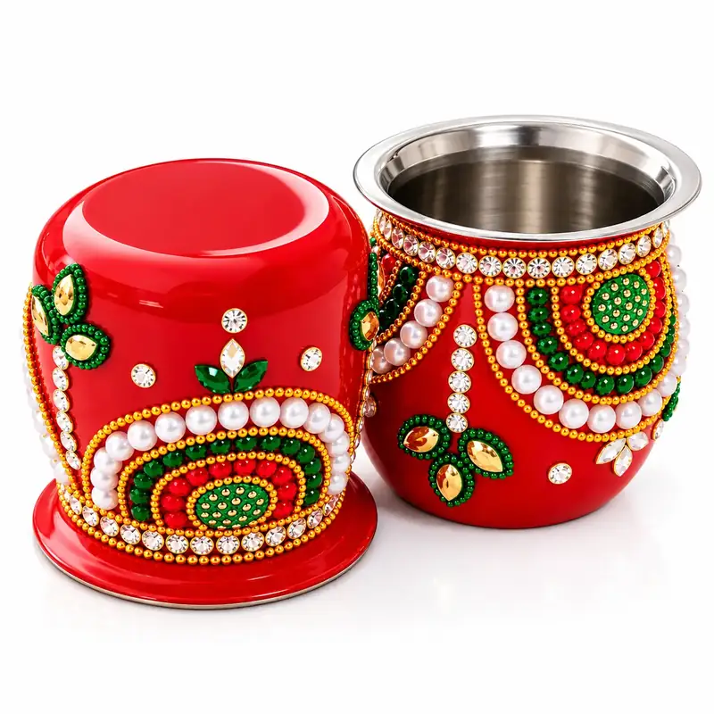

पूजा, दिवाली और नवरात्रि के लिए कलश सजाने के आसान और सुंदर तरीके
घर में जब भी नवरात्रि का घटस्थापना हो, दिवाली की लक्ष्मी पूजा हो या नया घर लेने पर गृह प्रवेश — सबसे पहले नज़र मंगल कलश पर ही जाती है। आइए जानते हैं घर पर आसानी से और बिना झंझट के कलश को राजस्थानी अंदाज़ में कैसे सजाएं।

🌐 Language / भाषा चुनें: 🇮🇳 हिंदी (Hindi) 6 Indian Languages
1. त्योहारों पर मंगल कलश क्यों इतना खास माना जाता है?
हमारे घरों में बड़े-बुजुर्ग हमेशा कहते हैं कि पूजा की शुरुआत कलश स्थापना के बिना अधूरी रहती है। नवरात्रि के नौ दिन हों, दिवाली की शाम हो या शादी का मंडप — जल से भरा कलश, आम के हरे पत्ते और ऊपर रखा नारियल पूरे घर में सुख-समृद्धि और सकारात्मकता का एहसास भर देता है।
आजकल लोग पूजा के कोने को साफ-सुथरा और सुंदर रखने के लिए कलश की सजावट पर भी पूरा ध्यान देते हैं, ताकि आरती के समय पूरा मंदिर खिल उठे।
2. घर पर कलश सजाने के 5 आजमाए हुए देसी तरीके
अगर आपके पास समय है और आप खुद अपने हाथों से कलश सजाना चाहते हैं, तो ये आसान आइडिया बहुत पसंद किए जाते हैं:
- लाल रंग और मिरर-मोती का मेल: लाल बेस पर गोल या तिकोने छोटे कांच (mirror) और सफेद मोती की लड़ियां लगाने से दीये की रोशनी में कलश खूब चमकता है।
- रोली से शुभ स्वास्तिक और मौली: कलश के गले में तीन या पांच बार लाल-पीली मौली (कलावा) लपेटें और सामने की तरफ रोली या चंदन से साफ स्वास्तिक बनाएं।
- आम के पत्ते और नारियल का शृंगार: 5 या 7 ताजे आम के पत्ते चारों तरफ बराबर सजाएं और बीच में लाल चुनरी या कलावा बंधा जटा वाला नारियल टिका दें।
- गोटा-पट्टी और कुंदन बॉर्डर: नवरात्रि या शादी के कलश पर सुनहरी गोटा लेस और हरे-लाल कुंदन स्टोन लगाने से एकदम राजस्थानी लुक आ जाता है।
- गेंदे के फूलों का घेरा: कलश को जिस चौकी या थाली पर रखें, उसके चारों ओर ताजे गेंदे के फूल या गुलाब की पंखुड़ियां बिछा दें।
3. स्टील, पीतल या मिट्टी — किस कलश पर सजावट सबसे ज्यादा टिकती है?
मिट्टी का कलश नवरात्रि में पारंपरिक लगता है, लेकिन वह एक ही बार इस्तेमाल हो पाता है और पानी रिसने का डर रहता है। पीतल का कलश बार-बार काला पड़ जाता है और उस पर चिपके स्टोन साफ करने में निकल जाते हैं।
वहीं, हैवी-ड्यूटी स्टेनलेस स्टील का डेकोरेटिव कलश सबसे बढ़िया विकल्प है। अंदर से साफ स्टील होने के कारण इसमें गंगाजल या पूजा का जल भरना एकदम सुरक्षित रहता है, और बाहर से कुंदन-मिरर वर्क सालों तक नया बना रहता है।
4. पूजा से एक दिन पहले कलश कैसे तैयार करें?
- कलश को अंदर से साफ पानी से धोकर सूखे सूती कपड़े से अच्छी तरह पोंछ लें।
- अगर डेकोरेटिव कलश है, तो बाहर से सिर्फ सूखे नरम कपड़े से धूल पोंछें ताकि कांच और मोती चमकते रहें।
- पूजा वाले दिन सुबह ताजा जल, एक सिक्का, सुपारी और थोड़ा अक्षत डालकर आम के पत्ते व नारियल सजाएं।
- पूजा पूरी होने के बाद पानी खाली करके कलश को पूरी तरह सुखा लें और बटर पेपर या कपड़े में लपेटकर डिब्बे में रख दें।
रेडीमेड डेकोरेटिव स्टील कलश देखना चाहते हैं?
जोधपुर के कारीगरों द्वारा हाथ से सजाए गए छोटे पूजा कलश (₹200) और बड़े मंडप/गृह प्रवेश कलश (₹1,500) सीधे WhatsApp पर ऑर्डर करें:


अक्सर पूछे जाने वाले सवाल
क्या सजाए हुए स्टील कलश के अंदर पानी और नारियल रख सकते हैं?
जी हां, हमारे स्टील कलश अंदर से बिल्कुल सादे और साफ स्टेनलेस स्टील के होते हैं। आप आराम से जल, आम के पत्ते और नारियल रख सकते हैं।
गृह प्रवेश और शादी के लिए कौन सा कलश साइज सही रहता है?
रोजाना पूजा या करवा चौथ के लिए ₹200 वाला छोटा कलश लोटा बढ़िया है, जबकि गृह प्रवेश, नवरात्रि और शादी के मंडप के लिए ₹1,500 वाला बड़ा मंगल कलश सबसे अच्छा दिखता है।
कलश पर लगे मिरर और मोती पानी से खराब तो नहीं होंगे?
बाहर वाटर-रेसिस्टेंट गोंद से काम किया जाता है, फिर भी कलश को रगड़कर धोने या पानी में भिगोने से बचें। हल्के कपड़े से पोंछने पर यह सालों तक नया रहेगा।